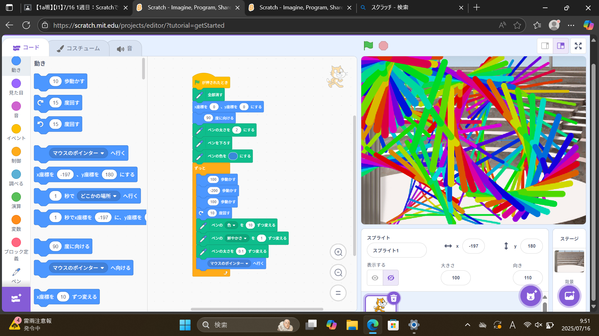
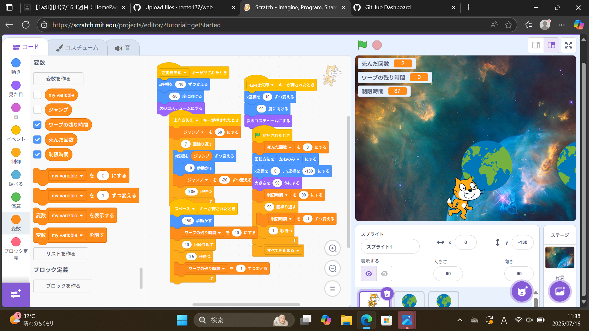

1週目のレポート ： 公大高専１年実習I-1
1a班20番 ニックネーム
第1週目
1-1 サイエンスアート

1.内容
猫が一定の距離を往復し、猫が通ったところをペンで色を塗ります。
そして、その色が変わりながら円を描かれて、円の形を変えたりできるプログラムを学習しました。
2.感想
少し数値を変えたり、ブロックを一つ増やすだけで形がかなり変わるところが面白かったです。
自分はマウスのポインターの位置に円を描き、時間がたてば線がどんどん太くなるプログラムうを作りましたが、
もう少し工夫して、自由にお絵描きできるプログラムを作ってみたいと思いました。
1-2 ゲーム

1.内容
猫を矢印キーで動かし、そのたびにコスチュームが変わります。
乱数を使ってリンゴを空から降らしてキャッチするたびに、スコアが増え、ジャンプの仕方などのプログラムを学習しました。
2.感想
自分が大好きなゲームを作れて楽しかったです。micro:bitよりもゲームがつくりやすかったです。
自分はキャッチするよりもよける方が楽しいので、学習したプログラムを元にゲームを作りました。休み時間も使って完成して不具合もなくて良かったです。
1-3 ホームページ作成
私のホームページ
1.内容
自分のホームページの作り方について、学びました。
具体的には、Forkを使って自分のホームページを作り、設定の仕方などを教えてもらいました。
2.感想
スクラッチの時よりも説明が速くなった気がしました。
自分のホームページの作り方がよくわからなくてgithubの登録後はほぼ全て先生にやってもらっていたので、今度は自分でも出来るようになりたいです。
各ページへのリンク
1週目のレポート
2週目のレポート
3週目のレポート
私のホームページ